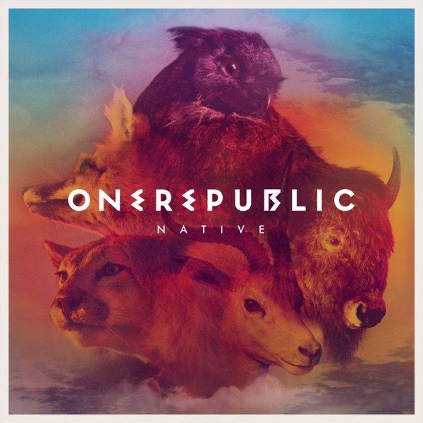
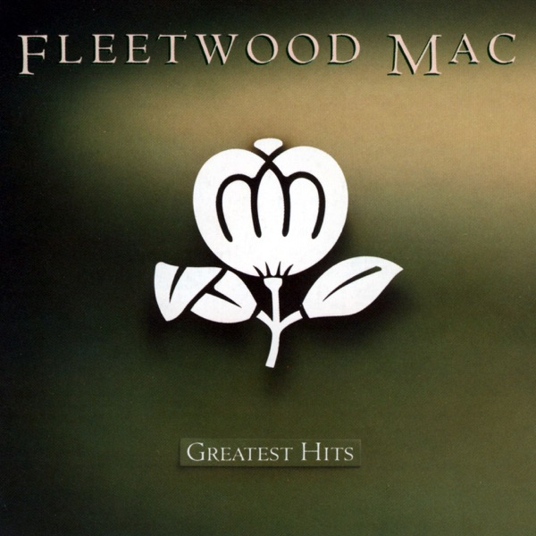
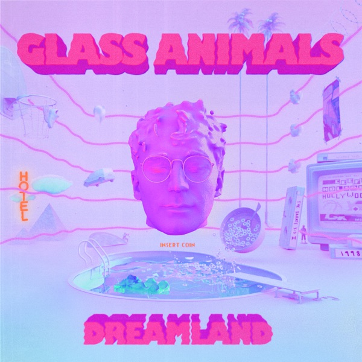
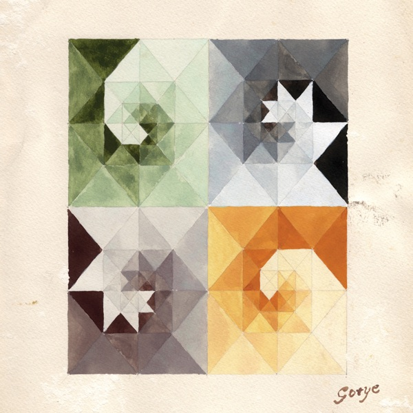

Counting StarsOneRepublic
底部四槽是两个世界的入口。迷你条是音乐本体，两模式同一条。
播放不是第五个页面，是自底升起的全屏层。




Lately I've been, I've been losing sleep
迷你条居中，标签栏贴底。桌面不另做侧栏；内容列仍从最顶开始。
六入口仍在：播放（层 + 条）/ 搜索 / 推荐 / 词卡 / 复习 / 账号。
A 是默认态：模式色高不透明度 + 高斯模糊，内容从下面滚过时只透出模糊的一层。
B 是守卫失败时的降级：纯色填充，结构、尺寸、位置不动。两版只换“材质”。
模式色材质：蓝世界蓝底白字，白世界白底蓝字。高不透明度保留可读性，透出只做“内容经过”的证据，不抢内容。
守卫裁定：材质模糊 = 模式色 + 豁免内容透出，属合法态。若扫描判不过，自动切 B；不删条、不换结构、不改位置。
条身是唯一的“升起播放层”热区；右侧播放按钮只切播放，不冒泡。窄屏单行，曲名中段截断，不换行、不挤按钮。
全屏层，不是页面。没有标签栏，没有迷你条，没有顶栏。层导航 chrome 只有两件：左上收起柄，右上词门。
点空白唤出；闲置 5 秒，两件一起隐去。
OneRepublic
OneRepublic
门负责世界翻转，条负责升层。系统“减少动态效果”时全部瞬时；到期点始终安静。
启动进入只给两颗微缩门，默认蓝。